<header>
  <mat-toolbar color="primary" class="mat-elevation-z4">
    <a mat-button routerLink="/">
      
      <span class="mat-title">Dodo</span>
    </a>

    <div class="header__spacer"></div>

    <ng-container *ngIf="user$ | async as user; else signInElement">
      <span>{{ user.displayName }}</span>

      <button type="button" mat-button (click)="onLogout()">Logout</button>
    </ng-container>

    <ng-template #signInElement>
      <a mat-button routerLink="/auth">
        Sign in
      </a>
    </ng-template>
  </mat-toolbar>
</header>
